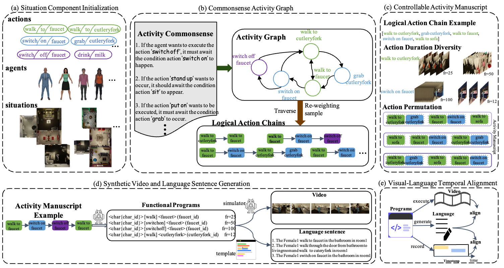

SVLTA
Our work aims to investigate and evaluate the ability of models to achieve alignment from a temporal perspective, specifically within more balanced temporal distributions, high-quality temporal annotations, and synthetic video situations. SVLTA consists of 96 different compositional actions, 26.2K synthetic video situations, and 78K high-quality temporal annotations with consistent visual-language semantics. This benchmark can provide a diagnostic evaluations in temporal question answering, distributional shift sensitiveness, and temporal alignment adaptation.
Preview
SVLTA consists of 96 different compositional actions, 26.2K synthetic video situations, and 78K high-quality temporal annotations with consistent visual-language semantics. This benchmark can provide a diagnostic evaluations in temporal question answering, distributional shift sensitiveness, and temporal alignment adaptation.

Generation Process
The benchmark generation process mainly contains five stages, including (a): Situation Component Initialization stage defines a series of compositional elements, which comprises diverse actions, agents, and situations, (b): Commonsense Activity Graph stage first builds a graph on the activity commonsense and then use the traversal algorithm and re-weighting sampling to acquire various and meaningful logical action chains, (c): Controllable Activity Manuscript stage operates the actions in logical action chains through different framerates and permutations to obtain the final activity manuscript, thereby balancing the temporal distribution, (d): Synthetic Video and Language Sentence Generation stages convert the generated activity manuscript to the functional programs and utilize it to generate synthetic videos and sentences, and (e): Visual-Language Temporal Alignment stage automatically associates the timestamps with the action in the sentence to obtain high-quality annotations. Data Examples
Video duration: 166.28s
Action sequence:
Video duration: 225.49s
Action sequence:
Video duration: 66.13s
Action sequence:
Video duration: 68.97s
Action sequence:
Data Download
Data Overview
96 Compositional Actions
26.2K Synthetic Video Situations
78K high-quality Temporal Annotations
Commonsense Activity Graph
Controllable Activity Manuscript
Data Download
Situation Component
component txtAnnotations for Specific Temporal Grounding Models Evaluation
train json val json test jsonAnnotations for Video LLMs Evaluation
anno jsonVideo Features
feature npyRaw Videos (the video is about 400GB, we are still trying to host it)
TODO mp4